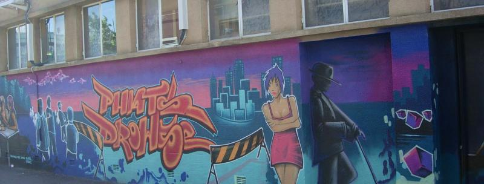
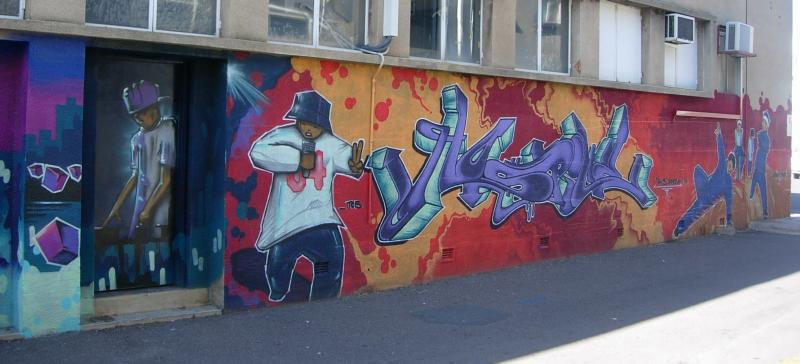
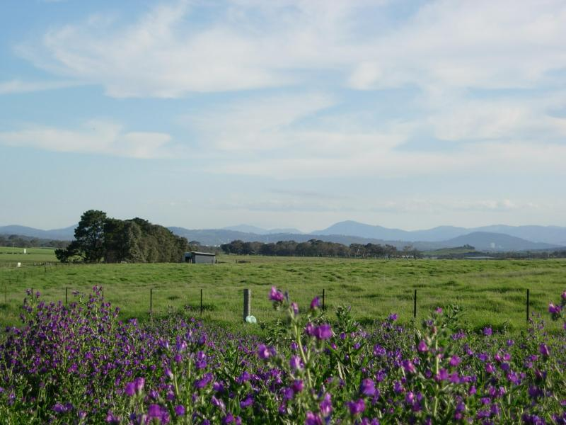
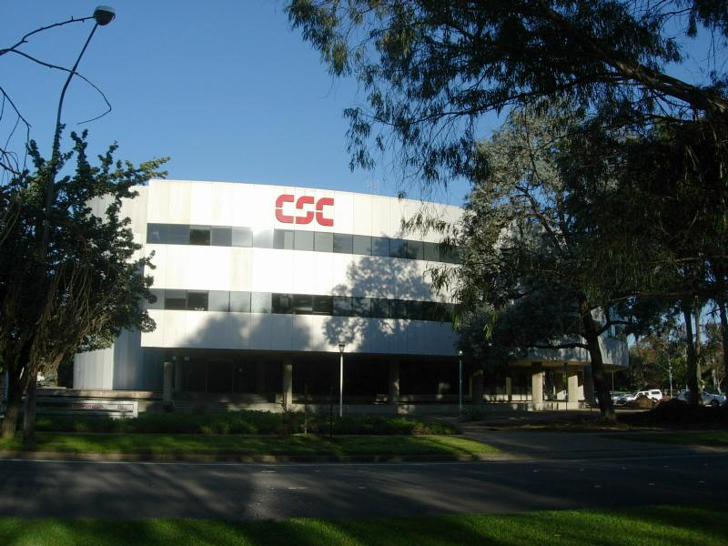
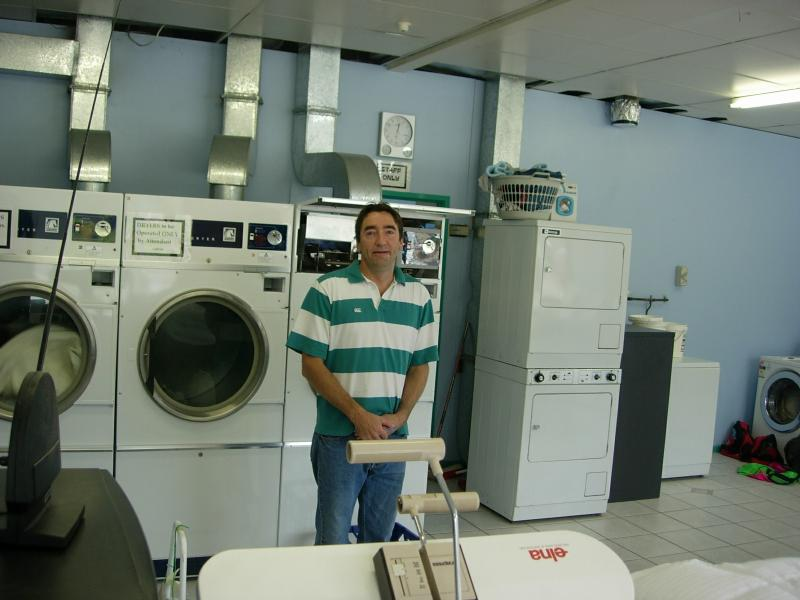
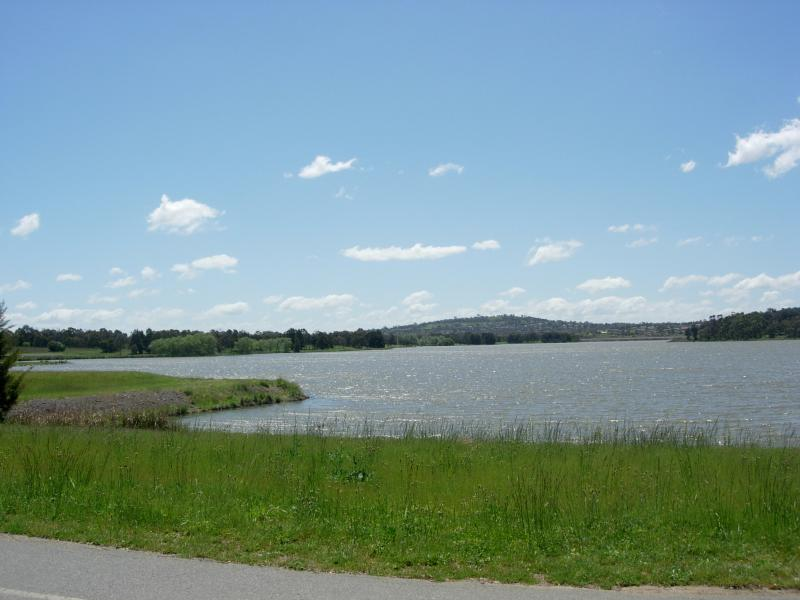
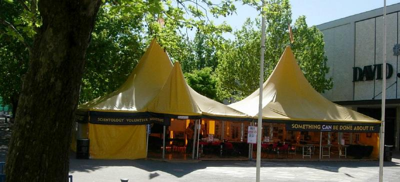
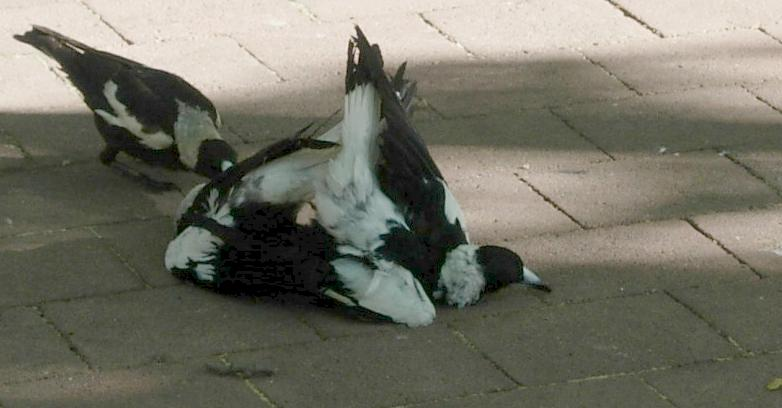

-=Canberra=-
Cultural Musings
Lots of text; if you just browse the pics you're out of luck


Hiphop is not much of a concept here. This mural was commissioned by the building owner (inquire inside).
The graffiti styles are borrowed from Brooklyn, but clothes are British pop-punk, and the you hear only a bit of rap on the radio--Aussie stuff that's pretty lame (e.g. repeating "I'm a maverick" for 5 minutes over drums). There's not enough anger here to make the style work.
And the radio--radically nonsegmented. Have heard Hawaiian language, big band, latin boogaloo, classical (Glen Gould) played in that order on one station. Big band and lounge music are huge here, as is indigenous rockabilly and Britpop.
Women's gym ad
Pop culture is much cleaner. Radio and TV ads, music, movies...sex and violence as commodities don't sell here. But conversation is more candid and ribald. You can say "fuck" at the dinner table of a coworker, wife present. (Actually, Peter, being Irish, says "feck".)

Countyside nothwest of town (near Gungahlin). Wallflowers with the Black Mountains in the background. Walking off the road to take this, I flushed out a grass parrot (green), red parrot, and a multicolor parrot couple, kind of like a lorrakeet, but smaller. They went too fast to get a pic.

CSC Canbera. It's in front of Canbera's worst neighborhood; the few junkies in town hang out in the back parking lot at night. Speaking of bad neighborhoods, when I heard the rumors of a Lockheed acquisition, I send Van Honeycutt (CEO) an email entitled "Please don't do this to us!" (I met him at a conference and he seemed an approachable guy, and this is totally within CSC culture. Until Lockheed fucks it up.) No response so far, but I bet I'll get one.

This bloke is pretty nice, but he explifies Australia's British-based concept of customer service. When I first pulled up in front of the shop, I nipped the curb. "In Australia we drive on the streets," he informed me. Then he groused because I brought my laundery in plastic bags rather than a proper laundery basket, compelling him to dump them in one of his own hampers. When I emptied the bag on the counter, he complained about my getting dirty laundery on his clean counter, and that if I didn't get it, he'd be less subtle next time. I thought it was a joke until he began grousing to Peter about me. Then I got mad; then I started laughing. In Australia "service people" have process requiements that the customer must conform to. Same as the short shop hours--the emphasis is on my labor conditions, not your needs or satisfaction. Oh yeah, he also tells me shirts will be ready on days when the ironing lady's out.
After 20 min in a restaraunt I got a menu, but no water or napkin. I was about to be American and depart in a rage. An Aussie coworker called the service "a bit ordinary". Ordinary in the sense of disappointing. The Australian throat chokes over saying negative things about others. This makes it hard to get rid of incompetent people, because at performance reviews you can't come right out and say so.

Lake Ginninderra, northwest of town. The opposite side of the street is a big enclosed mall. They're pretty good about developing to preserve nature here.
Kept my ears open for America's image abroad. One Aussie wrote in the uni newspaper, "It was not at all what I expected. They have the best of everything and the worst of everything. I can't explain it, I can only put it in songs."
What's the image? We have an inexplicable love affair with guns. We have school shootings. We launch aggressive war, which Australia has never done. Their attitude toward war is conditioned by World War I, when Australia/New Zealand toops were used as cannon fodder by the British high command. The death rate was 33%, casualty rate was 66%. In a small population, this had a huge impact, and is still remembered seriously and soberly, as though it were last week rather than last generation.
We have a president who's as bad as John Howard. (John is privitizing everything he can get his hands on. The phone company is 49% private, and now that there's a profit motive, they no longer support rural access). One lady at DIMIA began to complain about America--thought it was going to be global warming, but it was about our date conventions that screw up calculations (we're the only DD/MM/YYYY country in the world.) We're a scary big brother who's family, but into bad shit.

Who cares about global warming?. A worse American evil is loose in the land.People are much more open and friendly here. Socializing is as easy as it was in college. There's not this no-time-how-can-I-fit-you-into-my-calendar thing. At home, I often have to schedule getting together with friends a few weeks in advance. Here everybody just does stuff. The US has developed this triple-threat pressure of being totally devoted to work, totally devoted to family, and putting aside time to maintain your own health. It sucks. This is the way to go.

Felix Coniunctio
When magpies mate, the female lies down on her side with a large leaf in her talons. While mating, other males come around and hopefully preen her head.
What do I say about the US?
We insist on guns because an armed citizenship is the last guarantee against tyranny. Guns do flow into criminal hands; open borders and the gun lobby prevent effective restriction to licensed owners. Why are there school shooting and rampant crime? Our sense of community has disappeared due to hypermobility, identity politics from the 60s, non-assimilating immigrants, and Reagan's application of capitalism to collective goods. Why should I pay for schools when I have no kids? I don't personally benefit.
The application of the economic metaphor to social life has gone to an extreme we're uneasy with, exemplified mainly by the healthcare crisis. We scorn socialism, but want capitalism with a human face. We don't know how to think about that; we don't know where to go from here.
Our sense of national identity in the 50s and early 60s was based on "We're the best in science, medicine, outer space, manufacturing, we have the world's highest standard of living, we're more moral in foreign policy than anyone else, and the logic of economics dictates that we're the world's future". No of that is true any more, and we don't know how to proceed from here.
Bush's reelection revealed a shocking split in the polity that most of us didn't know existed. Half the country relies on tradition to the exclusion of reason. They're our own fundamentalists resisting modernity. The mistaken belief in contemporary Christianity of an eternal hell forces them to demonize others in order to conceive how a just God could send some there--but not them. What do we do, refight the Civil War? We though hate-based religion disappeared a long time ago. We don't know where to go from here.